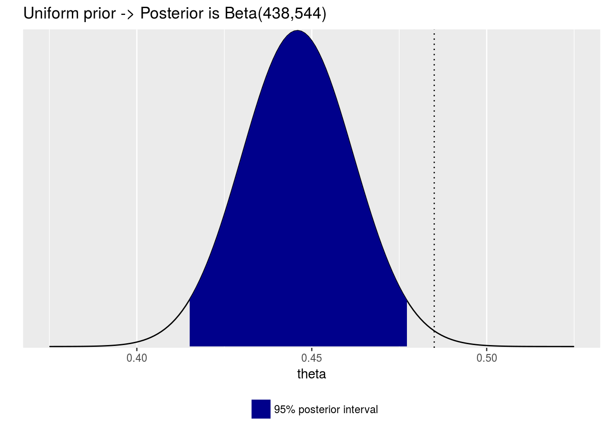
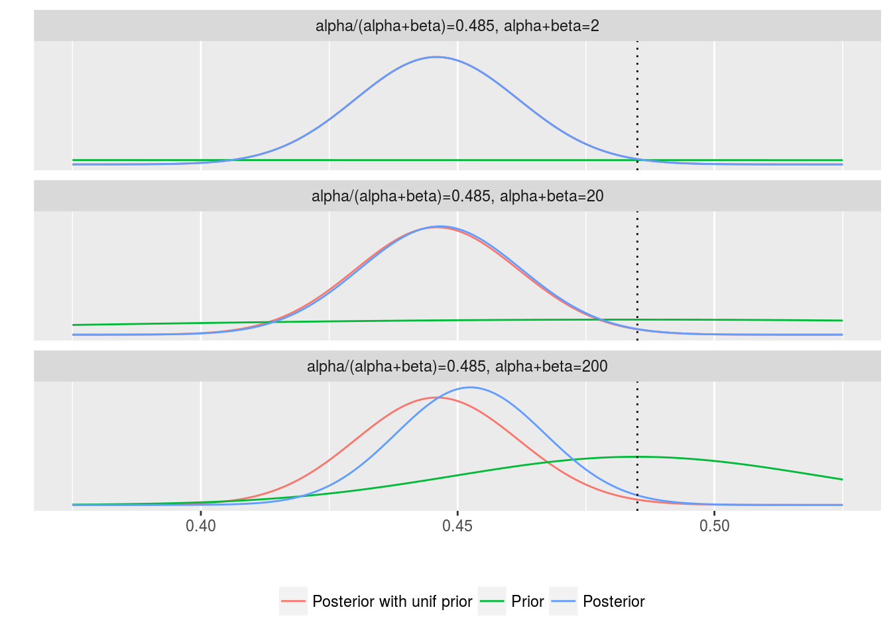
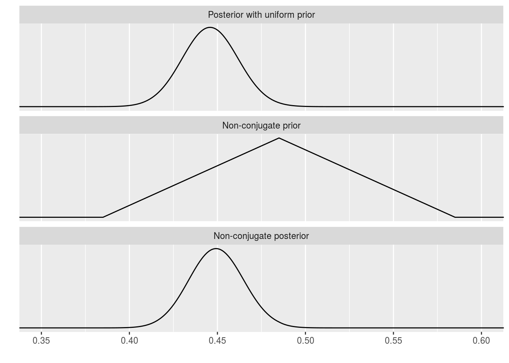

2.1 Binomial models
Estimating a probability from binomial data
- let \(\theta\) be the proportion of successes in the population
- the data \((y_1,\dots,y_n)\in \{0,1\}^n\)
- the total number of successes in the \(n\) trials is denoted by \(y\)
the binomial model is \[p(y|\theta) = C_n^y\theta^y(1-\theta)^{n-y}\]
the posterior distribution is \[p(\theta|y) \propto p(\theta)p(y|\theta)\propto p(\theta)\theta^y(1-\theta)^{n-y}\]
Example: estimating the probability of a female birth
- A total of 241,945 girls and 251,527 boys were born in Paris from 1745 to 1770.
How to choose a proper prior?
A naive choice for \(p(\theta)\) is uniform on the interval \([0,1]\). Then \[p(\theta|y) \propto \theta^y(1-\theta)^{n-y}\]
that is, \(\theta|y\sim Beta(y+1,n-y+1)\)
 - \(P(\theta\ge 0.5|y=241945,n=241945+251527)\approx 1.15\times 10^{-42}\)
- \(P(\theta\ge 0.5|y=241945,n=241945+251527)\approx 1.15\times 10^{-42}\)
Prediction
- Let \(\tilde y\) be the result of a new trial \[P(\tilde y =1|y) = \int_0^1 P(\tilde y=1|\theta,y)p(\theta|y)d \theta=E[\theta|y]=\frac{y+1}{n+2}\]
Posterior as compromise between data and prior information
- prior mean is \(1/2\)
- sample mean is \(y/n\)
- posterior mean is \((y+1)/(n+2)\)
- the compromise is controlled to a greater extent by the data as the sample size increases.
Posterior quantiles and intervals
- let \(T_1\) be the \(\alpha/2\) quantile of the posterior distribution
- let \(T_2\) be the \(1-\alpha/2\) quantile of the posterior distribution
- \(100(1-\alpha)\%\) posterior interval is \([T_1,T_2]\)

- compare with the usual confidence interval
Informative prior distributions
Goal: assigning a prior distribution that reflects substantive info.
the likelihood is \[p(y|\theta) \propto \theta^y(1-\theta)^{n-y}\]
- choose a prior as a \(Beta(\alpha,\beta)\) distribution: \[p(\theta) \propto \theta^{\alpha-1}(1-\theta)^{\beta-1}\]
the parameters \(\alpha,\beta>0\) of the prior distribution is called hyperparameters.
the posterior is \[p(\theta|y)\propto \theta^{\alpha+y-1}(1-\theta)^{n-y+\beta-1}=Beta(\alpha+y,\beta+n-y)\]
Informative prior distributions
the posterior mean is \[E[\theta|y]=\frac{\alpha+y}{\alpha+\beta+n}\] which lies between the sample proportion \(y/n\) and the prior mean \(\alpha/(\alpha+\beta)\)
the posterior variance is \[Var[\theta|y]=\frac{(\alpha+y)(\beta+n-y)}{(\alpha+\beta+n)^2(\alpha+\beta+n+1)}=\frac{E[\theta|y](1-E[\theta|y])}{\alpha+\beta+n+1}\]
as \(y\) and \(n\) become large with fixed \(\alpha,\beta\), \[E[\theta|y]\approx \frac yn,\ Var[\theta|y]\approx \frac 1n\frac yn(1-\frac yn).\]
Conjugate prior distributions
Definition: If \(\mathcal{F}\) is a class of sampling distribution \(p(y|\theta)\), and \(\mathcal{P}\) is a class of prior distributions for \(\theta\), then the class \(\mathcal{P}\) is conjugate for \(\mathcal{F}\) if \[p(\theta|y)\in \mathcal{P} \text{ for all } p(\cdot|\theta)\in\mathcal{F} \text{ and }p(\cdot)\in\mathcal{P}.\]
Advantages of conjugate prior distributions
- computational convenience
- can be interpreted as additional data
Exponential families
Definition: The class \(\mathcal{F}\) is an exponential family if all its members have the form \[p(y_i|\theta)=f(y_i)g(\theta)\exp[\phi(\theta)^\top u(y_i)].\]
- \(f(\cdot)\ge 0\)
- \(\phi(\theta)\) is called the
natural parameter
For iid samples, we have \[p(y|\theta)=\left(\prod_{i=1}^n f(y_i)\right)g(\theta)^n\exp\left[\phi(\theta)^\top \sum_{i=1}^nu(y_i)\right] \] \[p(y|\theta)\propto g(\theta)^n\exp[\phi(\theta)^\top t(y)]\]
- where \(t(y)=\sum_{i=1}^nu(y_i)\) (i.e., a sufficient statistic for \(\theta\)).
Conjugate prior distribution for exponential families
If the prior distribution is specified as \[p(\theta)\propto g(\theta)^\eta \exp[\phi(\theta)^\top \nu],\] then the posterior density is \[p(\theta|y)\propto g(\theta)^{\eta+n} \exp[\phi(\theta)^\top (\nu+t(y))].\]
A list of exponential families
- binomial distributions
- normal distributions
- exponential distributions
- possion distributions
Example: Probability of a girl birth given placenta previa
An early study concerning the sex of placenta previa births in Germany found that of a total of 980 births, 437 were female.
How much evidence does this provide for the claim that the proportion of female births in the population of placenta previa births is less than 0.485, the proportion of female births in the general population?
using a uniform prior: the posterior is \(Beta(438,544)\). The central \(95\%\) posterior interval is \([0.415,0.477]\).
- using conjugate prior \(Beta(\alpha,\beta)\)
using nonconjugate prior
Different conjugate prior distributions
| \(\alpha/(\alpha+\beta)\) | \(\alpha+\beta\) | posterior median | \(95\%\) posterior interval |
|---|---|---|---|
| 0.500 | 2 | 0.446 | [0.415, 0.477] |
| 0.485 | 2 | 0.446 | [0.415, 0.477] |
| 0.485 | 5 | 0.446 | [0.415, 0.477] |
| 0.485 | 10 | 0.446 | [0.415, 0.477] |
| 0.485 | 20 | 0.447 | [0.416, 0.478] |
| 0.485 | 100 | 0.450 | [0.420, 0.479] |
| 0.485 | 200 | 0.453 | [0.424, 0.481] |
- Posterior inferences based on a large sample are not sensitive to the prior distribution.
- All the \(95\%\) posterior intervals exclude the prior mean.
The effect of prior distributions

Using a nonconjugate prior distribution
 \(95\%\) posterior interval is [0.419, 0.480]
2.2 Normal models
Estimating a normal mean with known variance
Likelihood function: \[p(y|\theta) = \prod_{i=1}^n \frac 1{\sqrt{2\pi}\sigma}e^{-\frac{(y_i-\theta)^2}{2\sigma^2}}\propto e^{-\frac{n\theta^2}{2\sigma^2}}e^{\frac{n\theta\bar y}{\sigma^2}}\]
Conjugate prior: \(\theta\sim N(\mu_0,\tau_0^2)\)
Posterior distribution: \[p(\theta|y)\propto e^{-\frac{n\theta^2}{2\sigma^2}}e^{\frac{n\theta\bar y}{\sigma^2}}e^{-\frac{\theta^2}{2\tau_0^2}}e^{\frac{\mu_0\theta}{\tau_0^2}}=N(\mu_n,\tau_n^2)\]
where \[\mu_n=\frac{\frac 1{\tau_0^2}\mu_0+\frac n{\sigma^2}\bar y}{\frac 1{\tau_0^2}+\frac n{\sigma^2}},\ \frac1{\tau_n^2}=\frac{1}{\tau_0^2}+\frac n{\sigma^2}.\]
Normal distribution with known mean but unknown variance
Likelihood function: \[p(y|\sigma^2)=\prod_{i=1}^n \frac 1{\sqrt{2\pi}\sigma}e^{-\frac{(y_i-\theta)^2}{2\sigma^2}}\propto \sigma^{-n}\exp\left[-\frac{n}{2\sigma^2}\nu\right]\] where the sufficient statistic is \[\nu=\frac 1n\sum_{i=1}^n(y_i-\theta)^2.\] Conjugate prior density: \[p(\sigma^2)\propto (\sigma^2)^{-(\alpha+1)}e^{-\beta/\sigma^2},\] where the hyperparameters is \((\alpha,\beta)\).
We may take \(\theta\sim \text{Inv-}\chi^2(\nu_0,\sigma^2_0)\) as a prior (i.e., \(\theta\stackrel d {=}\sigma_0^2\nu_0/\chi^2_{\nu_0}\)).
Normal distribution with known mean but unknown variance
Prior density: \[p(\sigma^2)= \text{Inv-}\chi^2(\nu_0,\sigma^2_0)\]
Posterior density: \[p(\sigma^2|y)=\text{Inv-}\chi^2\left(\nu_0+n,\frac{\nu_0\sigma_0^2+n\nu}{\nu_0+n}\right)\]
- degree of freedom = sum of the prior and data
scale = weighted average of the prior and data
if \(\nu_0=0\), \(p(\sigma^2|y)=\text{Inv-}\chi^2(n,\nu)\), as effectively taking \(p(\sigma^2)\propto 1/\sigma^2\) (improper prior, serves as an noninformative prior)
2.3 Poisson models
Poisson models
Applications: The Possion distribution arises naturally in the study of data taking the form of counts.
- number of customer on the queue over an unit time
- epidemiology – the incidence of diseases
Likelihood function: \[p(y|\theta) = \prod_{i=1}^n\frac{\theta^{y_i}e^{-\theta}}{y_i!}\propto \theta^{t(y)}e^{-n\theta}\propto e^{-n\theta}e^{t(y)\log \theta}\]
- \(t(y)=\sum_{i=1}^n y_i\) is the sufficient statistic
- the natural parameter is \(\log \theta\)
Conjugate prior: \[p(\theta)\propto e^{-\eta\theta}e^{\nu\log \theta}\]
So we may choose \(p(\theta)=Gamma(\alpha,\beta)\propto \theta^{\alpha-1}e^{-\beta\theta}\)
Poisson models
Prior density: \(p(\theta)=Gamma(\alpha,\beta)\)
Posterior density: \(p(\theta|y)=Gamma(\alpha+n\bar y,\beta+n)\)
Marginal density: \[p(y_i)=C_{\alpha+y_i-1}^{y_i} \left(\frac{\beta}{\beta+1}\right)^\alpha\left(\frac{1}{\beta+1}\right)^{y_i}\]
- \(y_i\sim \text{Neg-bin}(\alpha,\beta)\), i.e., the negative binomial distribution
Possion models: an extension
In many applications, it is convenient to extend the Possion model for data pionts \(y_1,\dots,y_n\) to the form \[y_i\sim Poission(x_i\theta),\]
the values \(x_i\) are known positive values of an explanatory variable \(x\), called the exposure of the \(i\)th unit
\(\theta\) is unknown, called the rate
Prior density: \(p(\theta)=Gamma(\alpha,\beta)\)
Posterior density: \[p(\theta|y)=Gamma(\alpha+\sum_{i=1}^ny_i,\beta+\sum_{i=1}^nx_i)\]
Example: Bayesian inference for the cancer death rates (p.48)
2.4 Exponential models
Exponential models
Applications: The expoential distribution is commonly used to model ‘waiting times’ and other continuous, poisitive, real-valued random variables. It has a ‘memoryless’ property that makes it a natural model for survival or lifetime data.
Likelihood function: \[p(y|\theta) = \prod_{i=1}^n\theta \exp(-y_i\theta)= \theta^{n}e^{-n\bar y \theta}\]
Prior density: \(p(\theta)=Gamma(\alpha,\beta)\)
Posterior density: \[p(\theta|y)=Gamma(\alpha+n,\beta+n\bar y)\]
Summary
| Population | Parameter | Conjugate prior |
|---|---|---|
| Binomial | probability of success | Beta dist. |
| Possion | mean | Gamma dist. |
| Exponential | inverse mean | Gamma dist. |
| Normal (known variance) | mean | Normal dist. |
| Normal (known mean) | variance | Inv-Gamma dist. |
End notes
two kinds of prior distributions: uniform (noninformative) and conjugate (informative)
some other noninformative prior distributions: Jeffreys’ prior etc. See pp.52-56
noninformative prior are often useful when it does not seem to be worth the effort to quantify one’s real prior knowledge as a probability distribution
when using conjugate prior, it remains to choose the hyperparameters; see Chapter 5 for hierarchical models
Comments